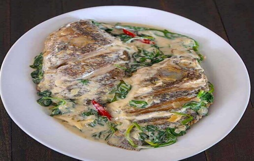

Ginataang Tilapia
What is Ginataang Tilapia?
Ginataang tilapia is fish with spinach cooked in coconut milk. I am specifically using tilapia, a fish belonging to the tilapiine cichlid tribe, for this recipe. Red snapper and mackerel works well too. The word “ginataan” (also spelled as guinataan) is a Filipino cooking method that involves coconut meat or cream.
Ingredients
2 pieces tilapia cleaned
2 cups coconut milk
4 cloves garlic crushed
1 piece onion chopped
1 thumb ginger cut into strips
2 pieces long green pepper
2 tablespoons fish sauce
2 pieces Thai chili pepper
1/4 teaspoon ground black pepper
2 cups fresh spinach
3 tablespoons cooking oil
Instructions / How to Cook
1. Heat the cooking oil in a cooking pot.
2. Sauté the onion, garlic, and ginger in the hot oil.
3. Once the onion become soft, pour the coconut milk into the pot. Let boil and cover. Cook for 5 minutes between low to medium heat.
4. Add the chili peppers and tilapia. Cover and simmer for 12 minutes.
5. Add long green chili peppers and season with fish sauce and ground black pepper. Stir. Cook for 3 minutes.
6. Add the spinach. Cover and cook for 1 minute.
7. Transfer to a serving plate. Serve hot. Share and Enjoy!